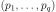
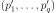
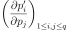

DistributionParameters¶
-
class
DistributionParameters(*args)¶ Define a distribution with particular parameters.
This class enables to create a set of non-native parameters in order to define distribution.
A DistributionParameters object can be used through its derived classes:
See also
- Attributes
thisownThe membership flag
Methods
__call__(inP)Call self as a function.
evaluate()Compute native parameters values.
Accessor to the object’s name.
Get the description of the parameters.
Build a distribution based on a set of native parameters.
getId()Accessor to the object’s id.
getImplementation(*args)Accessor to the underlying implementation.
getName()Accessor to the object’s name.
Accessor to the parameters values.
gradient()Get the gradient.
inverse(inP)Convert to native parameters.
setName(name)Accessor to the object’s name.
setValues(values)Accessor to the parameters values.
-
getClassName()¶ Accessor to the object’s name.
- Returns
- class_namestr
The object class name (object.__class__.__name__).
-
getDescription()¶ Get the description of the parameters.
- Returns
- collection
Description List of parameters names.
- collection
-
getDistribution()¶ Build a distribution based on a set of native parameters.
- Returns
- distribution
Distribution Distribution built with the native parameters.
- distribution
-
getId()¶ Accessor to the object’s id.
- Returns
- idint
Internal unique identifier.
-
getImplementation(*args)¶ Accessor to the underlying implementation.
- Returns
- implImplementation
The implementation class.
-
getName()¶ Accessor to the object’s name.
- Returns
- namestr
The name of the object.
-
gradient()¶ Get the gradient.
- Returns
- gradient
Matrix The gradient of the transformation of the native parameters into the new parameters.
- gradient
Notes
If we note  the native parameters and  the new ones, then the gradient matrix is .
-
inverse(inP)¶ Convert to native parameters.
- Parameters
- inPsequence of float
The non-native parameters.
- Returns
- outP
Point The native parameters.
- outP
-
setName(name)¶ Accessor to the object’s name.
- Parameters
- namestr
The name of the object.
-
setValues(values)¶ Accessor to the parameters values.
- Parameters
- valuessequence of float
List of parameters values.